YCS 2026 · Design System v2.0
Nusa Cerah
Cerah, ramah, dan cepat dipakai: dibuat untuk pengguna 15–35 tahun, mobile-first, kontras AA, target sentuh minimal 44 px. Semua token di sini bernama sama dengan variabel di ds.css dan Figma.
01 · Warna
Navy 900 · ink--navy-900 · #0A2463
Navy 950--navy-950 · #061840
Blue 600 · primary--blue-600 · #1F5FD6
Blue 500--blue-500 · #2F7BFF
Blue 100--blue-100 · #DCEBFF
Blue 50--blue-50 · #EEF4FF
Sun 400 · accent--sun-400 · #FFC93C
Sun 100--sun-100 · #FFF3CC
Coral 500 · live--coral-500 · #D92D20
Green 600 · sukses--green-600 · #0F7A4F
Violet 600 · game--violet-600 · #6A3DE8
Background--bg · #F5F8FF
Ink--ink · #0F1B3D
Ink 2 · body--ink-2 · #45506B
Ink 3 · meta--ink-3 · #5F6982
Line--line · #E1E7F2
Line 2--line-2 · #CDD6E6
Surface--surface · #FFFFFF
AANavy 900 di atas putih 14,5:1 · Blue 600 di atas putih 5,7:1 · Navy 900 di atas Sun 400 9,5:1 · Coral 500 di atas putih 4,8:1 · Ink 3 di atas background 5,2:1 · teks putih tidak dipakai di atas Sun 400.
02 · Tipografi
Plus Jakarta Sans (UI, buatan desainer Indonesia) · Caveat Bold hanya untuk aksen tulisan tangan ("Indonesia Juara"), maksimal 1× per layar.
Display40/44 · ExtraBold 800 · -1.2
Selamat, para finalis!H132/38 · 800 · -0.8
Festival Satu KataH224/30 · 800 · -0.5
Jadwal liveH318/24 · 700
Road to BaliBody16/24 · Medium 500
Satu orang, satu kata harapan untuk Indonesia.Small14/20 · 500
Kode dibagikan saat live.Caption12/16 · SemiBold 600
Rabu, 23 Des · 08.00 WIBOverline12/16 · 800 · +1.4 · CAPS
Kampanye utamaScript aksenCaveat 700 · 34–64
Indonesia Juara03 · Tombol
PrimarySun / CTADarkGhostOutline
Tonton liveFokus (keyboard)Nonaktif
Large 56Medium 48Small 36
Aturan: 1 tombol Sun per layar = aksi utama kampanye. Primary = aksi form. Label kata kerja, maksimal 3 kata.
04 · Badge & chip
LiveKampanye utamaAkan datangDibukaSelesaiGame
SemuaGolden BuzzerSeleksi umumProvinsi
Ikon tile 44 · warna = jenis fitur (konsisten di semua layar)
05 · Input & status
Nama lengkap
rizky@
YCS-7K2QD
rizky@gmial.com
Maksudnya gmail.com?06 · Umpan balik
Kartu tersimpan ke galeri
Kuota habis. Pantau live berikutnya untuk kode baru.
Form dibuka saat panitia mengumumkannya lewat live.
Skeleton
07 · Radius & elevasi
sm 10
md 14
lg 20
xl 28
e1
e2
e3
ring
08 · Spasi & grid
4
8
12
16
24
32
40
Basis 4 pt. Mobile 390: margin 16, gutter 10. Desktop 1440: margin 56, 12 kolom, gutter 24.
09 · Karakter adat (24)

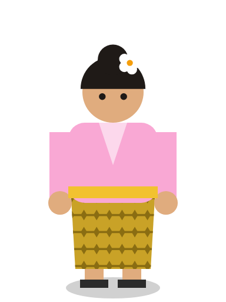


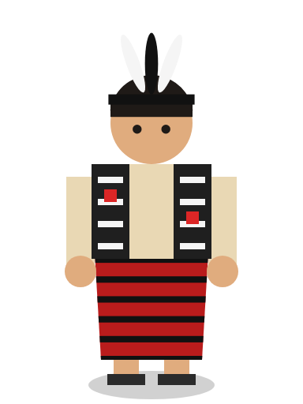

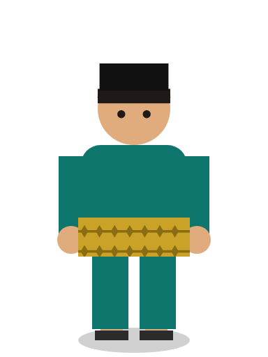

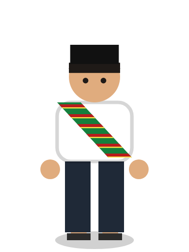


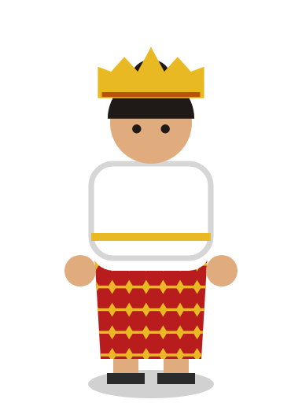
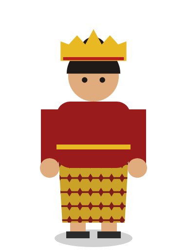
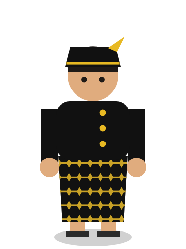
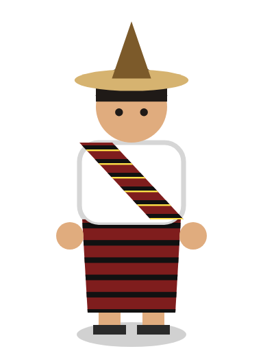
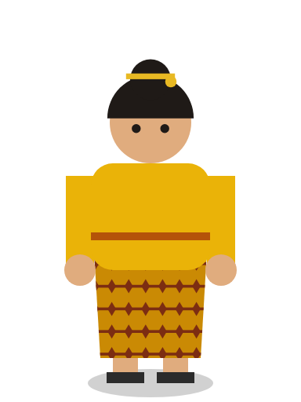
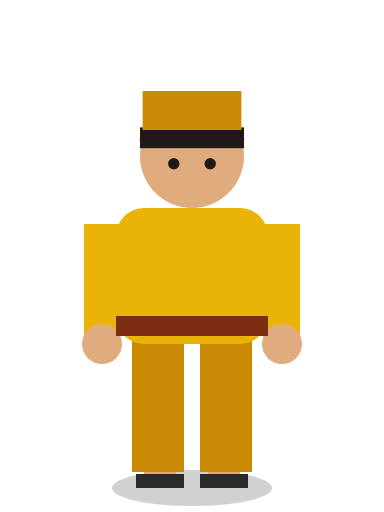
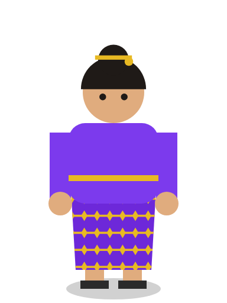
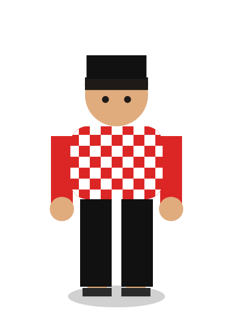
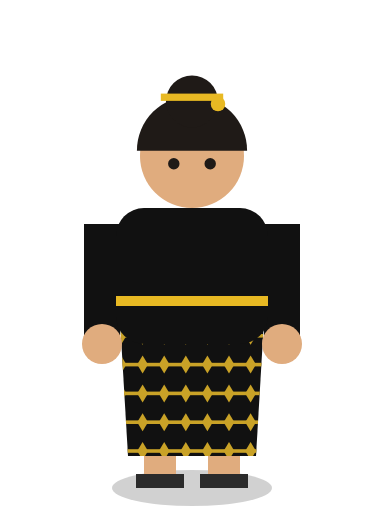
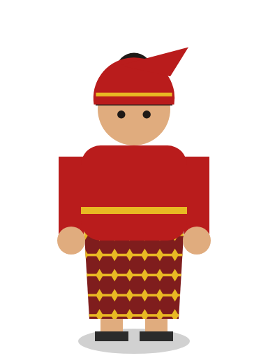